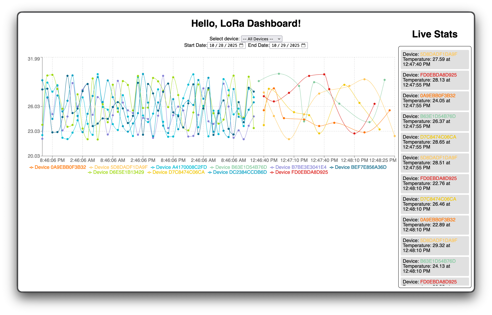
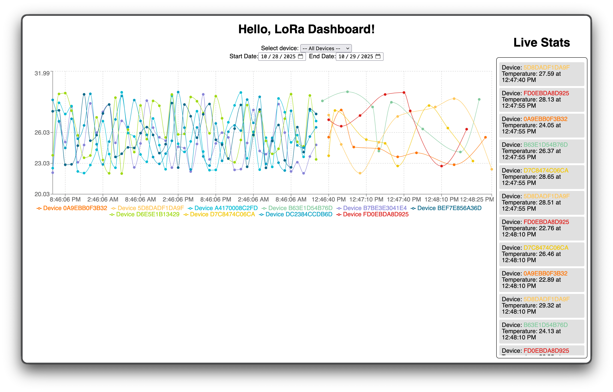

LoRa Dashboard
Full-stack project focused on providing an end-to-end platform to recieve and monitor IoT sensor readings.
View Project I am a recent Computer Science undergraduate with a concentration in Cybersecurity and Networking, along with a minor in Mathematics. As a dedicated research assistant, I have delved into the fascinating realms of hardware reverse engineering. Working under the guidance of esteemed professionals, I've conducted in-depth research and developed experience in analyzing and manipulating Blackbox devices, implementing innovative attacks to alter their output without raising suspicion. Through this experience, I strengthened my skills in information gathering, PCB schematic recreation, IoT device application creation, and hardware measurements. I have performing controlled experiments, collecting hardware and digital data, and demonstrating statistical significance to expose vulnerabilities. With a drive to explore cutting-edge technologies, I am passionate about building secure and robust systems to safeguard against cyber threats. Welcome to my portfolio, where I showcase my dedication to learning Computer Science through my projects and accomplishments.
Colorado State University - Fort Collins, CO
Technologies I've worked with through school, research and messing with fun tech!
Full-stack project focused on providing an end-to-end platform to recieve and monitor IoT sensor readings.
View Project Recreated embedded firmware for the nRF 9160dk to allow for lab testing. Firmware was reverse engineered using register readings, pin testing and background information.
View ProjectAnalyzed and tested custom Blackbox PCB along with pre-programmed nRF 9160dk.
View ProjectEmail: pdj1183@gmail.com